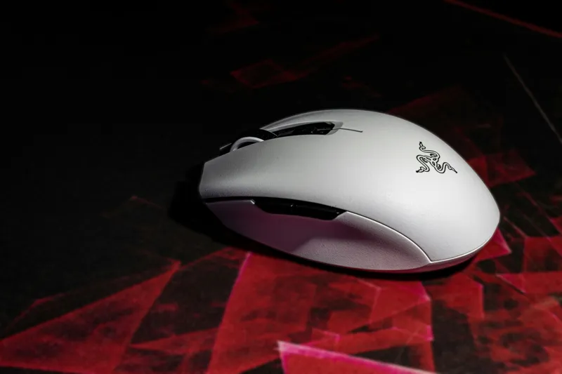
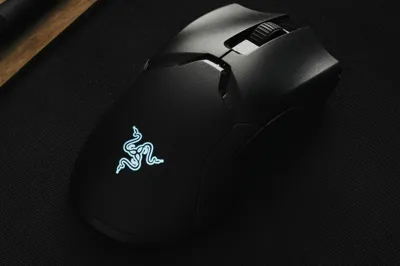
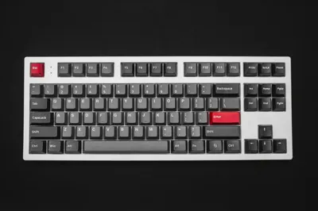
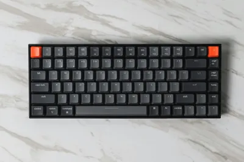
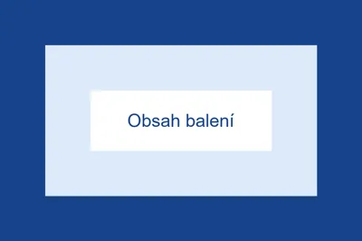

Razer DeathAdder V3
Lehká ergonomická myš pro hráče
Přidáno do nabídky:
Popis

Razer DeathAdder V3 je lehká myš tvarovaná pro pravou ruku. Hodí se pro hráče, kteří chtějí přesné míření a pohodlný úchop i při dlouhém hraní.
Myš je jednoduchá: žádná zbytečná tlačítka navíc, jen to, co při hraní opravdu použijete. Díky tomu se rychle naučíte, kde co je, a během hry nemusíte přemýšlet, které tlačítko zmáčknout.
Řada DeathAdder patří mezi známé herní myši a mnoho hráčů si ji oblíbilo hlavně kvůli tvaru, který dobře padne do ruky. Model V3 na tuto tradici navazuje a zaměřuje se na nízkou hmotnost a přesnost.
Povrch myši je hladký a příjemný na dotek. Myš nepůsobí jako hračka, ale jako nástroj, který má jediný úkol: poslouchat vaši ruku co nejpřesněji.
Vlastnosti
- Nízká hmotnost, ruka se tolik neunaví.
- Přesný optický senzor s nastavitelným DPI.
- Optické spínače, které reagují rychle a dlouho vydrží.
- Ergonomický tvar pro pravou ruku.
- Kluzné nožky, se kterými myš lehce jezdí po podložce.
- Boční tlačítka na palec, kterým můžete přiřadit vlastní funkce.
- Ohebný kabel, který při rychlých pohybech nebrzdí.
Citlivost senzoru se dá měnit, takže si ji nastavíte podle sebe. Někdo má rád pomalejší a přesnější pohyb, jiný chce přejet celou obrazovku malým pohybem ruky.
Přesné technické parametry najdete na stránkách výrobce.
Použití
Myš stačí připojit kabelem k počítači, funguje hned bez instalace. V aplikaci výrobce si můžete nastavit citlivost a funkce tlačítek.
Hodí se hlavně na střílečky a rychlé hry, ale zvládne i běžnou práci, třeba psaní dokumentů nebo prohlížení internetu.
Pro nejlepší výsledek doporučujeme používat myš na látkové herní podložce. Senzor na ní pracuje spolehlivě a myš se lépe ovládá než na lesklém stole.
Myš občas otřete suchým nebo lehce navlhčeným hadříkem. Nepoužívejte agresivní čisticí prostředky, mohly by poškodit povrch.
Pro koho je myš vhodná
- Pro hráče stříleček, kteří potřebují rychle a přesně mířit.
- Pro praváky, kteří drží myš celou dlaní nebo konečky prstů.
- Pro ty, kdo u počítače tráví hodně času a chtějí lehkou myš.
- Pro začátečníky, kteří chtějí jednoduchou myš bez zbytečných funkcí.
Myš naopak není vhodná pro leváky, protože je tvarovaná jen pro pravou ruku.
Doručení
Zboží skladem odesíláme do 2 pracovních dnů. Doprava stojí 99 Kč, nad 1 500 Kč je zdarma.
Zásilku můžete nechat doručit domů kurýrem, nebo si ji vyzvednout na výdejním místě. O odeslání vás informujeme e-mailem.
Pokud vám myš nebude vyhovovat, můžete ji do 14 dnů od převzetí vrátit bez udání důvodu. Stačí nás kontaktovat přes stránku Kontakt.
Galerie



